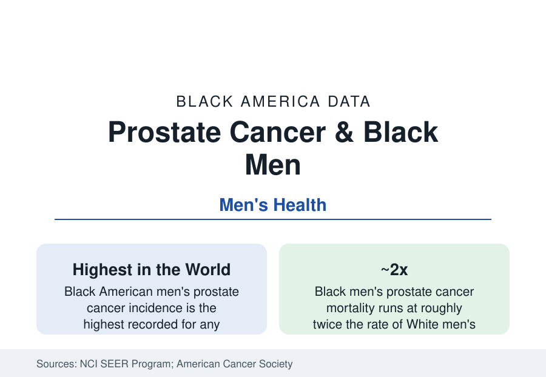

Black Public Health
Prostate Cancer in Black Men: The Highest Rates in the World
Black men record the highest prostate cancer incidence of any population in the world — and die of it at roughly twice the rate of White men. The registry data.

Black men develop prostate cancer at the highest rate of any population in the world — incidence in the SEER registry data runs roughly 70 percent above White American men's, itself among the world's highest — are diagnosed younger and at more advanced stages, and die of the disease at approximately twice the White rate. No cancer in the registry data presents a larger combined burden of incidence and disparity, and few present a more active scientific argument about causes and screening. This article reports the prostate data.
Incidence and the Age Curve
The registry picture is unambiguous at the top line. Prostate cancer is the most commonly diagnosed cancer in Black men (roughly a third of all Black male cancer diagnoses) and the second-leading cause of their cancer deaths. The age curve is shifted: Black men's incidence rises earlier, with diagnosis at a median age several years younger than White men's, and the early-onset share (diagnoses before 55) is disproportionately Black in the SEER data. The ancestry gradient is global — men of West African descent in the Caribbean record incidence in the same range, the world's highest regional figures — which anchors the genetic-susceptibility literature (the 8q24 risk loci and other ancestry-associated variants identified in the genome studies) as a genuine component, alongside the environmental and care variables that dominate the mortality analysis.
Mortality: Where Biology Ends and Systems Begin
The mortality gap's decomposition is the literature's central exercise, and its conclusion is the section's recurring one: stage at diagnosis and treatment account for the majority. Black men present with higher-grade and more advanced disease on average; within stage and grade, survival differences narrow substantially in the equal-access systems the studies use as natural experiments — the Veterans Health Administration and the military health system, where Black and White prostate outcomes converge most closely in the published analyses — while the screening-history and treatment-receipt gaps of the general system (lower PSA screening rates in the guideline-confused decades, lower rates of definitive treatment for high-risk disease in several registry analyses, trial enrollment in the low single digits) map onto the residual. The active-surveillance era adds a newer variable: Black men on surveillance protocols progress at higher rates in the cohort studies, making protocol design itself a disparity surface the urology literature now stratifies by ancestry.
The Screening Argument
Prostate screening is the prevention data's most contested file, and Black men are the population the contest most affects. The PSA era's arc — mass screening's rise, the task-force recommendations against routine screening (2012) on overdiagnosis grounds, the partial walk-back to shared decision-making (2018) — played out over a population for whom the calculus differs: higher baseline risk argues for earlier and more consistent screening in the specialty guidelines (the American Urological Association and the ACS both single out Black men for earlier screening conversations, from age 40 to 45 in the current guidance), while the overdiagnosis harms the skeptics cite also concentrate where treatment is likeliest. The measured result of the confused decades is in the registry: metastatic-at-diagnosis rates, which had fallen through the screening era, rose again in the 2010s data across groups, with Black men's rates highest throughout. The reference reports the guideline positions as they stand — earlier, risk-stratified, shared-decision screening for Black men is the current specialty consensus — inside a literature that remains genuinely unsettled at its edges.
Treatment Advances and Trial Access
The therapeutic frontier — robotic surgery, precision radiation, the PARP inhibitors and radioligand therapies of the advanced-disease era — enters the data through the access variables: treatment at high-volume centers (whose outcomes the volume literature favors) is unevenly distributed by the referral data, and clinical-trial enrollment for Black men with prostate cancer runs in the low single digits of participants in the FDA's approval-trial summaries, against a sixth of the disease's incidence — the representation gap whose closure the current trial-diversity frameworks target. Genomic testing of tumors (which guides the new therapies) records the same receipt gradient in the claims analyses.
Reading the Prostate Data
Prostate cancer is the men's-health file in one disease: the world's highest incidence, a mortality gap that equal-access systems largely erase, a screening debate whose resolution matters most to the men at highest risk, and a research frontier arriving through channels that reach them last. The registry's instruction is precise — this is the cancer where Black men's outcomes are most changeable by the system's ordinary machinery, applied evenly.
More in Black Public Health
Hypertension Among Black Adults: Prevalence, Control, and Consequences
About 55 percent of Black adults have hypertension — the highest rate of any U.S. group. Prevalence, onset, control, and the stroke, heart, and kidney consequences in the data.
Diabetes Among Black Adults: Prevalence and Complications
Nearly one in five Black adults has diabetes, diagnosed or undiagnosed — and its complications fall with particular weight. The CDC data on prevalence, control, and outcomes.
Black Life Expectancy: The Gap at Birth and Its Causes
Black life expectancy at birth is about 73 years, roughly five years below the national figure — the summary measure of every health gap in this section. The CDC data.
Source: National Cancer Institute, SEER Program; American Cancer Society, Cancer Facts & Figures for African Americans; Centers for Disease Control and Prevention, U.S. Cancer Statistics.